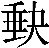
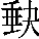
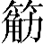
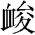

論德第三十八
上德不德，上德，謂太古無名號之君。德大無上，故言上德也。不德者，言其不以德教民，因循自然，養人性命，其德不見，故言不德也。是以有德；言其德合於天地，和氣流行，民得以全也。下德不失德，下德，謂號謚之君。德不及上德，故言下德也。不失德者，其德可見，其功可稱也。是以無德。以有名號及其身故。上德無爲，謂法道安静，無所改爲也。而無以爲；言無以名號爲。下德爲之，言爲教令，施政事也。而有以爲。言以爲己取名號也。上仁爲之，上仁，謂行仁之君，其仁爲上，[1]故言上仁也。爲之者，爲仁恩。而無以爲；功成事立，無以執爲。[2]上義爲之，爲義以斷割也。而有以爲。動作以爲己，殺人以成威，賦下以自奉也。上禮爲之，謂上禮之君，其禮無上。故言上禮爲之者，[3]言爲禮制度序威儀。而莫之應，言禮華盛實衰，飭僞煩多，動則離道，不可應也。則攘臂而仍之。言煩多不可應，上下忿争，故攘臂相仍引。故失道而後德，言道衰而德化生也。失德而後仁，言德衰而仁愛見也。失仁而後義，言仁衰而分義明也。[4]失義而後禮。言義衰則施禮聘，行玉帛。夫禮者，忠信之薄，言禮廢本治末，忠信日以衰薄。而亂之首。禮者賤質而貴文，故正直日以少，邪亂日以生。前識者道之華，不知而言知爲前識。此人失道之實，得道之華。[5]而愚之始。言前識之人，愚闇之倡始。是以大丈夫處其厚，大丈夫，謂得道之君也。[6]處其厚者，處身於敦朴。不居其薄；不處身違道，爲世煩亂也。處其實，處忠信也。不居其華。[7]不尚言也。故去彼取此。去彼華薄，取此厚實。[8]
法本第三十九
昔之得一者，昔，往也。一，無爲，[9]道之子也。天得一以清，地得一以寧，言天得一，故能垂象清明。地得一，故能安静不動摇。神得一以靈，言神得一，故能變化無形。谷得一以盈，言谷得一，故能盈滿而不絶也。萬物得一以生，言萬物皆須道以生成也。侯王得一以天下爲正。[10]言侯王得一，故能爲天下平正。其致之，致，誡也。謂下五事也。天無以清，將恐裂；言天當有陰陽、施張，[11]晝夜更用，[12]不可但欲清明無已時，將恐分裂，不爲天。地無以寧，將恐發；言地當有高下、剛柔、氣節、五行，不可但欲安静無已時，將恐發泄，不爲地。神無以靈，將恐歇；言神當有王、相、囚、死、休、廢，不可但欲靈無已時，將恐虚歇，不爲神也。谷無以盈，將恐竭；言谷當有盈縮、虚實，不可但欲盈滿無已時，將恐枯竭，不爲谷。萬物無以生，將恐滅；言萬物當隨時生死，不可但欲生無已時，[13]將恐滅亡，不爲物也。侯王無以貴高，將恐蹶。言侯王當屈己以下人，汲汲求賢，不可但欲高於人，[14]將恐顛蹶，失其位也。故貴以賤爲本，言必欲尊貴，當以薄賤爲本，若禹稷躬稼，[15]舜陶河濱，周公下白屋也。高必以下爲基。言必欲尊貴，當以下爲本基，猶築牆造功因卑成高，下不堅固，後必傾危。是以侯王自謂孤、寡、不轂，孤、寡，喻孤獨。不轂，喻不能如車轂爲衆輻所凑。此非以賤爲本耶？言侯王至尊貴，能以孤、寡自稱，此非以賤爲本乎？以曉人。非乎？嗟歎之辭。故致數車無車，致，就也。[16]言人就車數之，爲輻，爲輪，爲轂，爲衡，爲轝，無有名爲車者，故成爲車。以喻侯王不以尊號自名，故能成其貴。不欲琭琭如玉，落落如石。琭琭，喻少；落落，喻多。玉少故見貴，石多故見賤。言不欲如玉爲人所貴，如石爲人所賤，當處其中也。
去用第四十
反者道之動，反，本也。本者，道所以動，動生萬物，[17]背之則亡也。弱者道之用。柔弱者，道之所常用，[18]故能長久。天下萬物生於有，萬物皆從天地生，[19]天地有形位，故言生於有也。有生於無。天地神明蜎飛蠕動皆從道生。道無形，故言生於无。此言本勝於華，弱勝於強，謙虚勝盈滿也。
同異第四十一
上士聞道，勤而行之；上士聞道，自勤苦竭力而行之。中士聞道，若存若亡；中士聞道，治身以長存，治國以太平，欣然而存之。退見財色榮譽，或於情欲，而復亡之也。下士聞道，大笑之。下士貪狼多欲，見道柔弱，謂之恐懼，見道質朴，謂之鄙陋，故大笑之。不笑不足以爲道。不爲下士所笑，不足以名爲道。故建言有之：[20]建，設也。設言以有道，[21]當如下句。明道若昧，明道之人，若闇昧無所見。昧，梅對反。進道若退，進取道者，若退不及。夷道若類，夷，平也。大道之人，不自别殊，若多比類也。上德若谷，上德之人若深谷，不恥垢濁也。大白若辱，大潔白之人若污辱，不自彰顯。廣德若不足，德行廣大之人，若愚須不足也。[22]建德若偷，[23]建設道德之人，若可偷引，使空虚也。質真若渝，[24]質朴之人，若五色有渝，淺不明。大方無隅，大方正之人，无委曲廉隅。大器晚成，大器之人，若九鼎瑚璉，不可卒成也。大音希聲，大音，猶雷霆，待時而動，喻常愛氣希言也。大象無形，大法象之人，質朴無形容。道隱無名。道潛隱，使人無无能指名也。夫唯道，善貸且成。成，就也。言道善禀貸人精氣，且成就之也。
道化第四十二
道生一，道始所生者。[25]一生二，一生陰與陽也。二生三，陰陽生和、氣、濁三氣，[26]分爲天、地、人也。三生萬物。天地共生萬物也。[27]天施地化，人長養之也。萬物負陰而抱陽，萬物无不負陰而向陽，迴心而就日。[28]冲氣以爲和。萬物中皆有元氣，得以和柔，若胸中有藏，骨中有髓，草木中有空虚，與氣通，故得久生也。人之所惡，唯孤、寡、不轂，而王公以爲稱。孤、寡、不轂者，不祥之名。而王公以爲稱者，處謙卑，法虚空和柔。故物或損之而益，引之不得，推之必還。[29]或益之而損。夫增高者崩，[30]貪富者致患。人之所教，謂衆人所以教去弱爲強，去柔爲剛。我亦教之：[31]言我教衆人，使去強爲弱，去剛爲柔。強梁者，不得其死。強梁，謂不信玄妙，背叛道德，不從經教，尚勢任力也。不得其死者，爲天所絶，兵刃所伐，王法所殺，不得以壽命死也。吾將以爲教父。父，始也。老子以強梁之人爲教戒之始也。
遍用第四十三
天下之至柔，馳騁天下之至堅。至柔者，水；至堅，金石。水能貫堅入剛，無所不通。無有入無間，無有，謂道也。道無形質，故能出入无間，通神群生也。吾是以知無爲之有益。吾見道無爲而萬物自化成，是以知無爲之有益於人也。不言之教，法道不言，師之以身。無爲之益，法道無爲，治身則有益精神，治國則有益萬民，不勞煩也。天下希及之。天下，人主也。希能有及道無爲之治身治國也。[32]
立戒第四十四
名與身孰親？名遂則身退也。身與貨孰多？財多則害身也。得與亡孰病？好得利，則病於行也。甚愛必大費，甚愛色費精神，甚愛財遇禍患。所愛者少，所亡者多，故言大費。多藏必厚亡。生多藏於府庫，死多藏於丘墓，生有攻劫之憂，死有掘冢探柩之患。[33]知足不辱，知足之人絶利去欲，不辱於身。知止不殆，知可止則財利不累身，聲色不亂於耳目，則身不危殆也。[34]可以長久。人能知止足，則福禄在己。治身者神不勞，治國者民不擾，故可長久。
洪德第四十五
大成若

，謂道德大成之君。若缺者，滅名藏譽，如毀
不備也。其用不弊。其用心如是，則无弊盡時。大盈若冲，謂道德大盈滿之君也，如冲者，貴不敢驕也，富不敢奢也。其用不窮。其用心如是，則无窮盡時也。大直若屈，大直，謂修道法度正直如一也。如屈者，不與俗人争，如可屈折。屈，丘勿反。大巧若拙，大巧，謂多才術也。如拙者，亦不敢見其能。大辯若訥。大辯者，智無疑。如訥者，口無辭。躁勝寒，勝，極也。春夏陽氣躁疾於上，萬物盛大，極則寒，寒則零落死亡也。言人不當剛躁也。躁，則到反。静勝熱。秋冬萬物静於黄泉之下，極則熱，熱者，生之源。清静爲天下正。能清静，則爲天下長持正，則無終已時也。儉欲第四十六[35]
天下有道，謂人主有道也。卻走馬以糞。糞者，糞田也。[36]兵甲不用，卻走馬治農田，治身者卻陽精以糞其身。糞，弗問反。天下無道，謂人主無道也。戎馬生於郊。戰伐不止，戎馬生於郊境之上，久不還也。罪莫大於可欲，好淫色也。禍莫大於不知足，富貴不能自禁止也。咎莫大於欲得。欲得人物，利且貪也。故知足之足，守真根也。常足。无欲心也。
鑒遠第四十七
不出户，知天下；[37]聖人不出户以知天下者，以己身知人身，以己家知人家，所以見天下也。不窺牖，見天道。[38]天道與人道同，大人相通[39]，精氣相貫。人君清净，天氣自正；人君多欲，天氣煩濁。吉凶利害，皆由於己。窺，起規反。牖，音西。其出彌遠，其知彌少。謂去其家觀人家，去其身觀人身，所觀益遠，所見益少也。[40]是以聖人不行而知，聖人不上天，不入淵，能知天地，以心知之。不見而名，上好道，下好德；上好武，下好力。聖人原小知大，察内知外。無爲而成。[41]上無所爲，則下無事，家給人足，萬物自化就也。
忘知第四十八[42]
爲學日益，學，謂政教禮樂之學也。日益者，情欲文飾日以益多。爲道日損。道，謂自然之道也。日損者，情欲文飾日以消損。損之又損，[43]損情欲，又損之，所以漸去。[44]以至於無爲。當恬惔如嬰兒，[45]无所造爲。無爲而無不爲。情欲斷絶，德與道合，則无所不施，无所不爲也。取天下常以無事，取，治也。治天下常當以無事，不當煩勞也。及其有事，不足以取天下。及其好有事，則政教煩，民不安，故不足以治天下也。
任德第四十九
聖人無常心，聖人重改更，貴因循，若自无心。以百姓心爲心。百姓心之所便，因而從之。善者吾善之，百姓爲善，聖人因而善之。不善者吾亦善之，百姓雖有不善者，聖人化之使善也。德善。百姓德化，聖人爲善。信者吾信之，百姓爲信，聖人因而信之。不信者吾亦信之，百姓爲不信，聖人化之使信也。德信。百姓德化，聖人爲信。聖人在天下，[46]怵怵，[47]聖人在天下，怵怵常恐怖，富貴不敢驕奢。爲天下渾其心，言聖人爲天下，百姓渾濁其心，若愚闇不通也。百姓皆注其耳目，注，用也。百姓皆用其耳目爲聖人視聽也。聖人皆孩之。聖人愛念百姓如孩嬰赤子，[48]長養之而不責望其報。
貴生第五十
出生入死。出生，謂情欲出无内，[49]魂定魄静，故生也。入死，謂情欲入於胸臆，精神勞惑，故死。生之徒十有三，死之徒十有三，言死生之類，各有十三，謂九竅四關也。其生也，目不妄視，耳不妄聽，鼻不妄香臰，[50]口不妄言味，[51]手不妄持，足不妄行，精神不妄施，其死也及是也。[52]人之生動之死地十有三。[53]人之求生動作反之十三，死也。[54]夫何故？問何故動之死地也。以其生生之厚。所以動之死地者，以其求生活之事太厚，違道忤天，妄行失紀。蓋聞善攝生者，攝，養也。陸行不遇兕虎，自然遠避，害不干也。入軍不避甲兵；[55]不好戰以殺人。[56]兕無投其角，虎無所措爪，[57]兵無所容其刃。養生之人，虎兕無由傷，兵刃無從加之也。夫何故？問虎兕兵甲何故不害之。以其無死地。以其不犯十三之死地，[58]言神明營護之，此物不敢害。[59]
養德第五十一
道生之，道生萬物。德畜之，德，一也。一主布氣而畜養。物形之，一爲萬物設形象也。勢成之。一爲萬物作寒暑之勢以成之。是以萬物莫不尊道而貴德。道德所爲，無不盡驚動而尊敬。[60]道之尊，德之貴，夫莫之命而常自然。道一不命召萬物，而常自然，應之如影響。故道生之，德畜之，長之育之，成之孰之，養之覆之。道之於萬物，非但生之而已，乃復長養成孰覆育，全於性命。人君治國治身亦當如是也。生而不有，道生萬物，不有所取以爲利也。[61]爲而不恃，道所施爲，不恃望其報也。長而不宰，道長養萬物，不宰割以爲利也。[62]是謂玄德。道之所行恩德玄闇，不可得見。
歸元第五十二
天下有始，始，有道也。[63]以爲天下母。道爲天下萬物之母。既知其母，復知其子；[64]子，一也。既知道已，當復知一也。既知其子，復守其母，已知一，當復守道，反無爲。没身不殆。不危殆也。塞其兑，兑，目也。目不妄視也。閉其門，門，口也。使口不妄言。[65]終身不勤。人當塞目不妄視，閉口不妄言，則終身不勤苦。開其兑，開目視情欲也。濟其事，濟，益也。益情欲之事。終身不救。禍亂成也。見小曰明，萌芽未動，禍亂未見，爲小，昭然獨見爲明。守柔日強。守柔弱，日以強大也。用其光，[66]用其目光於外，視時世之利害。復歸其明，復當反其光明於内，[67]無使精神泄也。[68]無遺身殃，内視存神，不爲漏失。是謂習常。人能行此，是謂習修常道。
益證第五十三
使我介然有知，行於大道，介，大也。老子疾時王不行大道，故設此言：使我介然有知於政事，我則行於大道，躬无爲之化。唯施是畏。唯，獨也。獨畏有所施爲失道意。欲賞善，恐僞善生；欲信忠，恐詐忠起。大道甚夷，夷，平易也。而民好徑。徑，邪不平正也。大道世平易，[69]而民好從邪徑也。[70]朝甚除，高臺榭宫室修。田甚蕪，農事廢，不耕治。[71]倉甚虚；五穀傷害，國無儲也。服文綵，好飾僞，貴内華。[72]帶利劍，尚剛強，武且奢。厭飲食，財貨有餘，多嗜欲，無足時。是謂盗夸。百姓而君有餘者，[73]是由劫盗以爲服飾，[74]持行夸人，不知身死家破，親戚并隨也。非道哉！人君所行如是，此非道也。復言也哉者，痛傷之辭。
修觀第五十四
善建者不拔，建，立也。善以道立身立國者，不可得引而拔也。善抱者不脱，善以道抱精神者，終不可拔引解脱。子孫祭祀不輟。爲人子孫能修道如是，長生不死，世世以久，祭祀先祖宗廟，無絶時。修之於身，其德乃真；修道於身，愛氣養神，益壽延年。其德如是，乃爲真人。修之於家，其德有餘；修道於家，父慈子孝，兄友弟順，夫信妻貞。其德如是，乃有餘慶及於來世子孫。修之於鄉，其德乃長；修道於鄉，尊敬長老，愛養幼小，教誨愚鄙。其德如是，乃無不覆及也。修之於國，其德乃豐；修道於國，則君信臣忠，仁義自生，禮樂自興，政平無私。其德如是，乃爲豐厚也。修之於天下，其德乃普。人主修道於天下，不言而化，不教而治，下之應上，信如影響。其德如是，乃爲普傳。[75]故以身觀身，以修道之身，觀不修道之身，[76]孰亡孰存也。以家觀家，以修道之家，觀不修道之家也。以鄉觀鄉，以修道之鄉，觀不修道之鄉也。以國觀國，以修道之國，觀不修道之國也。以天下觀天下。以修道之主，觀不修道之主也。何以知天下之然哉？[77]以此。老子言：吾何知天下修道者昌，[78]背道者亡？以此五事觀而知之也。[79]
玄符第五十五
含德之厚，謂含懷道德之厚也。比於赤子。[80]神明保祐含德之人，若父母之於赤子也。毒蟲不螫，蜂蠆蛇虺不螫。猛獸不據，玃鳥不搏。[81]赤子不害於物，[82]物亦不害之。故太平之世，人無貴賤仁心。[83]有刺之物，還反其本；有毒之蟲，不傷於人。玃，居縛反。搏，音博。骨弱

柔而握固。赤子筋骨柔弱，而持物堅固，以其意心不移也。[84]未知牝牡之合而
作，精之至也；赤子未知男女之合會，而陰作怒者，由精氣多之所致也。終日號而不啞，和之至也。赤子從朝至暮啼號聲不變易者，和氣多之所致。知和曰常，人能知和氣之柔弱有益於人者，則爲知道之常也。知常曰明。[85]人能知道之常行，則日以明達於玄妙也。益生日祥，[86]祥，長也。[87]言益生欲自生，日以長大。心使氣日強。心當專一和柔而氣實内，故形柔；而反使妄有所爲，和氣去於中，故形體日以剛強也。物壯將老，萬物壯極則枯老也。謂之不道，老不得道。不道早已。不得道者早已死也。[88]玄德第五十六
知者不言，知者貴行不貴言也。言者不知。駟不及舌，多言多患。塞其兑，閉其門，塞門之者，[89]欲絶其源。挫其鋭，情欲有所鋭爲，當念道無爲以挫止之。解其紛，紛，結恨不休。當念道無爲以挫止之。[90]和其光，雖有獨見之明，當和之使闇昧，不使曜亂。[91]同其塵，不當自别殊也。是謂玄同。玄，天也。人能行此上事，是謂與天同道也。故不可得而親，不以榮譽爲樂，獨立爲哀。[92]亦不可得而疏；志静無故，[93]與人無怨。不可得而利，身不欲富貴，口不欲五味。亦不可得而害；不與貪争利，不與勇争氣。不可得而貴，不爲亂世主，不處暗君位。亦不可得而賤。不以乘權故驕，不以失志故屈。故爲天下貴。其德如此，天子不得臣，諸侯不得屈，與世沉浮，容身避害，故爲天下貴也。
淳風第五十七
以正治國，[94]以，[95]至也。天使正身之人使至有國也。[96]以奇用兵，奇，詐也。天使詐爲之人使用兵也。[97]以無事取天下。以無事無爲之人使取天下，爲之主。吾何以知其然哉？以此：此，今也。老子言：我何以知天意然哉？以今日所見知。天下多忌諱，而民彌貧；天下，謂人主也。忌諱者，防禁也。令煩則奸生，禁多則下詐相殆，故貧。民多利器，國家滋昏；利器者，權也。民多權，則視者眩於目，聽者惑於耳，上下不親，故國家昏亂。人多伎巧，奇物滋起；人謂人君，百里諸侯也。多知伎巧，謂刻畫宫觀、彫琢服章。奇物滋起，下則化上，飾金鏤玉，文繡綵色，日以滋甚。[98]法物滋彰，盗賊多有。法物，好物也。[99]珍好之物滋生彰著，則農事廢，飢寒並至，故盗賊多有也。故聖人云：謂下事也。我無爲而民自化，聖人言：我修道承天，無所改作，而民自化成也。我好静而民自正，聖人言：我好静，不言不教，民皆自忠正也。我無事而民自富，我無徭役征召之事，民安其業，[100]故皆自富。我無欲而民自朴。我常無欲，去華文，徵服飾，[101]民則隨我爲多質朴也。[102]
順化第五十八
其政悶悶，其政教寬大，悶悶昧昧，似若不明也。其民醇醇；政教寬大，故民醇醇富厚，相親睦也。其政察察，其政教急疾，言決於口，聽決於耳也。其民缺缺。政教急，[103]民不聊生，故缺缺日以疏薄。禍兮福之所倚，倚，因也。夫禍因福而生，天遭禍而能悔過，[104]責己修善行道，則禍去而福來。福兮禍之所伏。禍伏匿於福中。人得福而爲驕恣，則福去禍來。孰知其極？禍福更相生，誰能知其窮極時。其無正。无，不也。謂人君不正其身，其无國也。正復爲奇，奇，詐也。人君不正，下雖正，復化上爲詐也。善復爲妖。善人皆復化上，爲妖祥也。人之迷，其日固久。言人君迷惑失正以來，其日已固久。是以聖人方而不割，聖人行方正者，欲以率下，不以割截人也。廉而不害，聖人廉清，欲以化民，不以傷害人也。今則不然，正己以害人也。[105]直而不肆，肆，申也。聖人雖直，曲己從人，不自申之也。光而不曜。聖人雖有獨知之明，常如闇昧，不以曜亂人也。
守道第五十九
治人謂人君欲治理人民。事天，事，用也。當用天道，順四時。莫若嗇。嗇，貪也。[106]治國者當愛民，則不爲奢泰；[107]治身者當愛精氣，不放逸。夫唯嗇，是謂早服。早，先也。服，得也。夫獨愛民財，愛精氣，則能先得天道也。早服謂之重積德；先得天道，是謂重積德於己也。重積德，則無不剋；剋，勝也。重積德於己，則無不勝。無不剋，則莫知其極；無不剋勝，則莫有知己德之窮極也。莫知其極，可以有國；莫知己德有極，則可以有社稷，爲民致福。有國之母，可以長久。國、身同也。母，道也。人能保身中之道，使精氣不勞，五神不苦，則可以長久。是謂深根固蒂，人能以氣爲根，以精爲蒂，如樹根不深則拔，[108]蒂不堅則落。言當深藏其氣，固守其精，使無漏泄。蒂，丁計反。長生久視之道。深根固蔕者，乃長生久視之道。
【注释】
[1]“爲”，慶長本、道藏本作“無”。
[2]“無以執爲”，慶長本作“無執爲也”。
[3]“故言上禮”，慶長本無此四字。
[4]“分義”，慶長本、道藏本作“義分”。
[5]“華”下，慶長本有“者也”二字。
[6]“得道”，慶長本作“道德”。
[7]“居”，慶長本作“處”。
[8]“厚實”，慶長本作“淳厚”，道藏本作“實厚”。
[9]“無爲”，慶長本作“無也”。
[10]“以天下爲正”，慶長本作“爲天下正”，道藏本作“以爲天下正”。
[11]“施”，慶長本作“弛”。
[12]“用”下，慶長本有“事”字。
[13]“生”上，慶長本有“常”字。
[14]“高”，慶長本作“高貴”，道藏本作“貴高”。
[15]“稼”，慶長本作“耕”。
[16]“致就也”，慶長本無此三字。
[17]“本者”至“萬物”，慶長本作“道之所以動生萬物”。
[18]“所”下，慶長本有“以”字。
[19]“萬”上，慶長本有“天下”二字。
[20]“故”，慶長本、道藏本無此字。
[21]“以”，慶長本作“已”。
[22]“愚須”，慶長本作“愚頑”，道藏本作“頑愚”。
[23]“偷”，連同下句注文中之“偷”，慶長本均作“揄”。
[24]“真”，慶長本作“直”。
[25]“者”下，慶長本、道藏本有“一也”二字。
[26]“和氣濁”，慶長本作“和清濁”，道藏本作“和氣清濁”。
[27]“地”下，慶長本、道藏本有“人”字。
[28]下“而”，慶長本作“始”。
[29]“推之”，慶長本作“推讓”。
[30]“崩”上，慶長本有“速”字。
[31]“教之”，慶長本作“教人”。
[32]“之治”下，慶長本有“無爲之治治”五字。“無爲之”，道藏本作“之無爲無爲之治”。
[33]“掘冢探柩”，慶長本作“發掘”。道藏本作“掘發”。
[34]“知可”至“殆也”，慶長本“財”上有“止”字，“身不”上有“終”字。道藏本“止則”下有“須止乃”三字，“身不”上有“終”。
[35]“欲”，慶長本作“慾“。
[36]“糞田”，慶長本作“治田”。
[37]“户”下，慶長本、道藏本有“以”字。
[38]“牖”下，慶長本有“以”字。
[39]“大人”，慶長本、道藏本作“天人”。
[40]“見”，慶長本作“知”。
[41]“無”，慶長本、道藏本作“不”。
[42]“忘”，慶長本作“亡”。
[43]“又損”下，慶長本有“之”字。
[44]“去”下，慶長本、道藏本有“之也”二字。
[45]“惔”，慶長本無此字，道藏本作“淡”。
[46]“聖人”上，慶長本有“故”字。
[47]“怵怵”下，慶長本有“焉”字。
[48]“孩孾”，慶長本作“孩育”，道藏本作“嬰孩”。
[49]“无”，慶長本、道藏本作“五”。
[50]“香臰”，慶長本作“臭”，道藏本作“香臭”。
[51]“味”，慶長本無此字。
[52]“及”，慶長本、道藏本作“反”。
[53]“動”下，慶長本有“皆”字。
[54]“死”下，慶長本、道藏本有“地”字。
[55]“避”，慶長本、道藏本作“被”。
[56]“殺”，慶長本作“煞”。
[57]“兕無”至“措爪”，慶長本、道藏本“投”上有“所”字，“措”下有“其”字。
[58]“犯”下，慶長本有“上”字。
[59]“害”，慶長本有“人也”二字。
[60]“敬”下，慶長本有“之也”二字。
[61]“所”，慶長本無此字。“也”，道藏本作“用”。
[62]“割”，道藏本作“害”。“利”下，慶長本有“用”字。
[63]“有”，慶長本無此字。道藏本作“者”。
[64]“復”，慶長本作“又以”。
[65]“言”，慶長本作“説是非”。
[66]“用”上，慶長本有“目”字。
[67]“當”，慶長本、道藏本無此字。
[68]“泄”，慶長本作“洩外”。
[69]“世”，慶長本、道藏本作“甚”。
[70]“徑”下，慶長本有“不平正”三字。
[71]“治”下，慶長本有“失時也”三字。
[72]“内”，慶長本、道藏本作“外”。
[73]“百姓”下，慶長本、道藏本有“不足”二字。
[74]“由”，慶長本作“猶”。
[75]“傳”，慶長本、道藏本作“博”。
[76]“不修道之身”，慶長本“身”作“人”。
[77]“何”上，慶長本、道藏本有“吾”字。
[78]“何”下，慶長本、道藏本有“以”字。
[79]“五事”，慶長本無此二字。
[80]“比”下，慶長本有“之”字。
[81]“玃”，慶長本、道藏本作“攫”。
[82]“赤子”，原作“赤鳥”，據慶長本、道藏本改。
[83]“賤”下，慶長本、道藏本有“皆有”二字。
[84]“意”下，慶長本、道藏本有“專”字。
[85]“曰”，慶長本作“日”。
[86]“日”，慶長本作“曰”。
[87]“長”，道藏本作“道”。
[88]《老子》原文“物壯”至“早已”十二字，連同各句下河上公注，道藏本在《玄德第五十六》章“知者不言”上。
[89]“門”，慶長本、道藏本并作“閉”。
[90]“無爲以挫止之”，慶長本作“恬怕以解釋之也”，道藏本作“之淡薄以解釋”。
[91]“亂”下，慶長本有“人也”二字。
[92]“獨”，慶長本作“以獨”，道藏本作“同”。
[93]“故”，慶長本、道藏本并作“欲”。
[94]“以正”至下“以此”《老子》原文二十三字，連同各句下河上公注，道藏本在《玄德第五十六章》末尾。“治”，慶長本作“之”。
[95]“以”，慶長本作“之”。
[96]“使至”，慶長本無“使”字。
[97]“天使詐爲之人使用兵”，慶長本、道藏本“爲”作“僞”，慶長本無下“使”字。
[98]“滋甚”，慶長本作“滋起也“。
[99]“法物好物”，慶長本作“法好”。
[100]“民”上，慶長本有“使”字。
[101]“徵”，慶長本、道藏本作“微”。
[102]“爲多”，道藏本無此二字。
[103]“急”下，慶長本有“疾”字。道藏本“急”作“煩疾”。
[104]“天”，慶長本、道藏本作“人”。
[105]“正己以害也”，慶長本作“正己以割人清己以害人也”。
[106]“貪”，慶長本、道藏本作“愛”。
[107]“則”，慶長本、道藏本作“財“。
[108]“拔”，原作“枝”，依慶長本、道藏本改。
本章完!